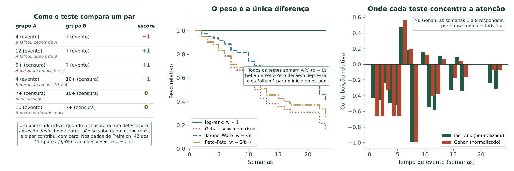
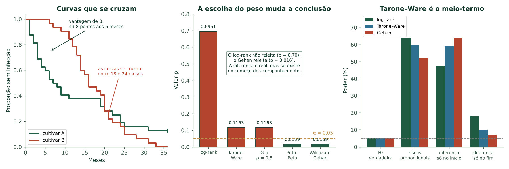

Teste generalizado de Wilcoxon–Gehan
Compara curvas de sobrevivência ponderando cada tempo de evento pelo número de unidades em risco, o que dá ênfase ao início do acompanhamento.
Comece por aqui
O teste de Wilcoxon–Gehan compara curvas de sobrevivência como o log-rank, mas ponderando cada tempo de evento pelo número de unidades ainda em risco. Como esse número decresce, o teste dá mais peso ao início do acompanhamento — que é onde há mais informação e onde, em muitos problemas, a diferença entre os tratamentos se concentra.
No exemplo fictício desta ficha, duas cultivares têm curvas que se cruzam: uma delas tem 43,8 pontos percentuais de vantagem aos 6 meses e perde essa vantagem até o fim. O log-rank devolve \(p=0{,}70\) — as contribuições positivas e negativas se cancelam. O teste de Gehan devolve \(p=0{,}016\).
O que é o teste
Gehan (1965) formulou o teste como uma contagem de pares, generalizando o teste de Mann-Whitney. Para cada par formado por uma unidade de cada grupo, pergunta-se qual das duas durou mais. Quando a censura impede a resposta, o par simplesmente não contribui. A forma moderna, equivalente, escreve a mesma estatística como uma soma ponderada das diferenças entre observado e esperado.

Se nenhuma observação for censurada, todos os pares são decidíveis e a contagem \(U\) é exatamente a estatística de Mann-Whitney. A censura é a única razão de existir da generalização: ela torna alguns pares indecidíveis, e o teste simplesmente os descarta. Nos dados de Freireich, 42 dos 441 pares (9,5%) são indecidíveis, e \(U=271\).
Pressupostos e como verificá-los
| Pressuposto | Por que importa | Como verificar |
|---|---|---|
| Censura não informativa | Igual ao Kaplan–Meier e ao log-rank. | Não há teste; examine os motivos de saída. |
| Observações independentes | A variância pressupõe isso. | Delineamento. |
| Padrão de censura semelhante nos grupos | O peso é o número em risco, que depende da censura: padrões muito diferentes distorcem a comparação. | Compare as distribuições dos tempos de censura; se diferirem muito, prefira Peto–Peto. |
| Grupos definidos antes do acompanhamento | Evita viés de tempo imortal. | Protocolo. |
| Escolha do teste feita antes de ver os dados | Escolher o peso pelo gráfico invalida o valor-p. | Protocolo. |
| Eventos em número suficiente | O poder depende dos eventos. | Conte os eventos, não as unidades. |
O peso \(w(t)=n_j\) depende do número em risco, que por sua vez depende de quantas unidades foram censuradas antes de \(t\). Se um grupo perde pacientes muito mais depressa que o outro, o peso reflete esse padrão de censura e não a estrutura de risco. O teste de Peto–Peto, que usa \(w(t)=\hat S(t^-)\) estimado sobre os dois grupos juntos, é a correção clássica desse problema, e é por isso que o R o oferece em survdiff(rho = 1). Quando não há censura antes do último evento, os dois coincidem exatamente.
Hipóteses e estatística de teste
Forma ponderada
| Teste | w(t) | Ênfase |
|---|---|---|
| Log-rank | 1 | Uniforme em todo o acompanhamento. |
| Wilcoxon–Gehan | nⱼ (número em risco) | Tempos iniciais. |
| Tarone–Ware | √nⱼ | Meio-termo. |
| Peto–Peto | Ŝ(tⱼ⁻) | Tempos iniciais, menos sensível à censura. |
| G-ρ de Harrington–Fleming | Ŝ(tⱼ⁻)^ρ | ρ escolhido pelo analista. |
Forma de contagem de pares
Em que:
- \(n_j\)
- unidades em risco imediatamente antes de \(t_j\)
- \(d_{1j},\ E_{1j}\)
- eventos observados e esperados no grupo 1 em \(t_j\)
- \(V_{1j}\)
- variância hipergeométrica
- \(w_j\)
- peso atribuído ao tempo \(t_j\)
- \(U\)
- soma dos escores de todos os pares
Exemplo numérico, passo a passo
| Unidade de A | Unidade de B | Situação | Escore |
|---|---|---|---|
| 4 (evento) | 7 (evento) | B falhou depois de A | −1 |
| 12 (evento) | 7 (evento) | A falhou depois de B | +1 |
| 9+ (censura) | 7 (evento) | A durou ao menos 9, mais que 7 | +1 |
| 4 (evento) | 10+ (censura) | B durou ao menos 10, mais que 4 | −1 |
| 7+ (censura) | 10+ (censura) | nada se sabe | 0 |
| 10 (evento) | 7+ (censura) | B pode ter durado mais | 0 |
São \(21\times21=441\) pares. Destes, 42 (9,5%) são indecidíveis por causa da censura, e sobram 399 comparáveis. A soma dos escores é
Pela forma ponderada, a soma \(\sum_j w_j(d_{1j}-E_{1j})\) vale \(-271\) — o mesmo número, com o sinal correspondendo à orientação oposta da contagem. A variância é \(\sum_j w_j^2 V_{1j}=5\,457{,}11\), e
Para comparar, o log-rank sobre os mesmos dados dá 16,79. Os dois rejeitam com folga; a diferença entre eles só passa a importar quando a vantagem de um grupo não é uniforme no tempo.
Propriedades
- Sem censura, reduz-se exatamente ao teste de Mann-Whitney.
- Pertence à mesma família ponderada do log-rank, da qual é o caso \(w_j=n_j\).
- Tem poder máximo quando o quociente de riscos diminui com o tempo, isto é, quando a diferença se concentra no início.
- Perde muito poder quando a diferença surge tardiamente: na simulação desta ficha, 7,0% contra 18,2% do log-rank.
- Quando não há censura antes do último evento, \(n_j\) é proporcional a \(\hat S(t_j^-)\) e o teste coincide exatamente com o de Peto–Peto, porque a estatística é invariante a multiplicar todos os pesos por uma constante.
- É mais sensível que o Peto–Peto a diferenças no padrão de censura entre os grupos.
- Como todos os testes da família, é válido sob \(H_0\) qualquer que seja a forma das curvas.
Como interpretar os resultados
| Elemento | O que informa | Cuidado |
|---|---|---|
| Estatística e valor-p | Evidência contra curvas iguais. | Com ênfase nos tempos iniciais. |
| Comparação com o log-rank | Onde está a diferença no tempo. | Divergência grande sugere riscos não proporcionais. |
| Pares indecidíveis | Quanta informação a censura consumiu. | Proporção alta pede cautela. |
| Curvas de Kaplan–Meier | O padrão temporal da diferença. | É o que dá sentido ao resultado. |
| Diferença de RMST | Tamanho do efeito, por horizonte. | Declare o τ. |
| Diferença de S(t) em tempos fixos | Efeito em pontos de interesse clínico. | Fixe os tempos no protocolo. |
Quando Gehan e log-rank levam a conclusões diferentes, isso não significa que um deles esteja errado: significa que a diferença entre os grupos não é uniforme no tempo. É um achado sobre os dados, e deve ser relatado como tal — junto com a curva, que mostra onde a diferença está. O que não se pode fazer é rodar os dois e reportar o que der o menor valor-p.
Como executar no R e em Python
Onde executar o código em Python
Não é preciso instalar nada: o Google Colab é um computador na nuvem, gratuito, que executa Python pelo navegador e já traz as bibliotecas usadas aqui (numpy, scipy e matplotlib).
O R base não oferece o peso de Gehan diretamente: survdiff() implementa a família \(G^\rho\), em que rho = 0 é o log-rank e rho = 1 é o Peto–Peto. Para o peso original de Gehan, use coin::logrank_test() com type = "Gehan-Breslow", que também oferece "Tarone-Ware" e "Peto-Peto". Para o tempo médio restrito, print(fit, rmean = tau) ou o pacote survRM2, que dá a diferença com intervalo de confiança.
library(coin)
logrank_test(Surv(tempo, evento) ~ grupo, data = dados, type = "Gehan-Breslow")
survdiff(Surv(tempo, evento) ~ grupo, data = dados, rho = 1) # Peto-Peto
Exemplo de aplicação
Contexto dos dados
A ficha tem dois exemplos. O primeiro são os dados de Freireich das fichas de Kaplan–Meier e log-rank, em que os testes concordam. O segundo é fictício e foi construído para o caso oposto: 64 plantas de duas cultivares, acompanhadas por 36 meses quanto ao tempo até a primeira infecção por um patógeno de solo, com a cultivar B apresentando resistência inicial que se perde com o tempo.
Código em R
# Teste generalizado de Wilcoxon-Gehan: exemplo completo ----
# Pacotes: survival (base/recomendado), survminer (gráficos)
library(survival)
# PARTE 1 - os dados de Freireich, os mesmos das duas fichas anteriores
tempo <- c(6,6,6,6,7,9,10,10,11,13,16,17,19,20,22,23,25,32,32,34,35,
1,1,2,2,3,4,4,5,5,8,8,8,8,11,11,12,12,15,17,22,23)
evento <- c(0,1,1,1,1,0, 0, 1, 0, 1, 1, 0, 0, 0, 1, 1, 0, 0, 0, 0, 0,
rep(1, 21))
grupo <- factor(rep(c("6-MP", "placebo"), each = 21))
dados <- data.frame(tempo, evento, grupo)
# O teste de Gehan, com peso igual ao número em risco.
# No R, a forma direta é pelo pacote coin; com survdiff, o mais próximo
# disponível é o Peto-Peto (rho = 1), que usa S(t-) como peso.
survdiff(Surv(tempo, evento) ~ grupo, data = dados, rho = 0) # log-rank
survdiff(Surv(tempo, evento) ~ grupo, data = dados, rho = 1) # Peto-Peto
# install.packages("coin")
library(coin)
logrank_test(Surv(tempo, evento) ~ grupo, data = dados, type = "Gehan-Breslow")
logrank_test(Surv(tempo, evento) ~ grupo, data = dados, type = "Tarone-Ware")
logrank_test(Surv(tempo, evento) ~ grupo, data = dados, type = "Peto-Peto")
logrank_test(Surv(tempo, evento) ~ grupo, data = dados, type = "logrank")
# A estatística de Gehan na forma ORIGINAL: contagem de pares
U <- 0; indecisos <- 0
for (i in which(grupo == "6-MP")) for (j in which(grupo == "placebo")) {
ti <- tempo[i]; ei <- evento[i]; tj <- tempo[j]; ej <- evento[j]
if (ti > tj && ej == 1) U <- U + 1
else if (tj > ti && ei == 1) U <- U - 1
else if (ti == tj && ei == 0 && ej == 1) U <- U + 1
else if (ti == tj && ei == 1 && ej == 0) U <- U - 1
else indecisos <- indecisos + 1
}
c(U = U, indecisos = indecisos, total = 21*21)
# Sem censura, essa contagem é exatamente a estatística de Mann-Whitney.
# PARTE 2 - o caso em que a escolha do peso muda a conclusão (dados fictícios)
A_t <- c(1,1,1,1,2,2,3,3,3,3,4,4,5,6,6,7,8,9,9,11,19,19,20,22,24,24,25,31,36,36,36,36)
A_e <- c(1,1,1,1,1,1,1,1,1,1,1,1,1,1,1,1,1,1,1, 1, 1, 1, 1, 1, 1, 1, 1, 1, 0, 0, 0, 0)
B_t <- c(6,7,9,11,11,12,12,13,13,14,14,14,14,15,16,16,16,18,19,20,20,20,20,21,21,22,24,25,25,28,31,33)
B_e <- rep(1, 32)
cult <- data.frame(tempo = c(A_t, B_t), evento = c(A_e, B_e),
cultivar = factor(rep(c("A", "B"), each = 32)))
fit2 <- survfit(Surv(tempo, evento) ~ cultivar, data = cult)
summary(fit2, times = c(3, 6, 12, 18, 24, 30, 36))
survdiff(Surv(tempo, evento) ~ cultivar, data = cult, rho = 0) # NÃO rejeita
survdiff(Surv(tempo, evento) ~ cultivar, data = cult, rho = 1) # rejeita
library(coin)
logrank_test(Surv(tempo, evento) ~ cultivar, data = cult, type = "Gehan-Breslow")
logrank_test(Surv(tempo, evento) ~ cultivar, data = cult, type = "Tarone-Ware")
# Quando as curvas se cruzam, relate o tempo médio restrito
print(fit2, rmean = 12)
print(fit2, rmean = 24)
print(fit2, rmean = 36)
# install.packages("survRM2")
library(survRM2)
rmst2(cult$tempo, cult$evento, as.integer(cult$cultivar) - 1, tau = 12)
rmst2(cult$tempo, cult$evento, as.integer(cult$cultivar) - 1, tau = 36)
# Gráficos
library(survminer)
ggsurvplot(fit2, data = cult, conf.int = FALSE, risk.table = TRUE,
xlab = "Meses", legend.title = "Cultivar")
plot(fit2, fun = "cloglog", col = c("darkgreen", "firebrick"), lwd = 2)
# Linhas que se cruzam: riscos NÃO proporcionais.
A mesma análise em Python, com os resultados
Cole o código em um notebook do Google Colab ↗ e execute com Shift+Enter. Os valores abaixo são a saída desse código.
# Bibliotecas: numpy, scipy e matplotlib (todas já no Google Colab)
import numpy as np
from scipy import stats
# ===================================================================
# Funções comuns às fichas de sobrevivência
# ===================================================================
def tabela_tempos(t, e, gr):
T = np.unique(t[e == 1]); L = []
for x in T:
L.append((x, np.sum(t >= x), np.sum((t == x) & (e == 1)),
np.sum((t >= x) & (gr == 0)), np.sum((t == x) & (e == 1) & (gr == 0))))
return np.array(L, float)
def ponderado(t, e, gr, peso="logrank"):
"""Família de testes ponderados; o peso é o que distingue um do outro."""
L = tabela_tempos(t, e, gr); x, n_, d_, n1, d1 = L.T
E1 = d_*n1/n_
V1 = d_*(n1/n_)*(1-n1/n_)*(n_-d_)/np.maximum(n_-1, 1)
Sc = np.r_[1.0, np.cumprod(1 - d_/n_)[:-1]] # S(t-) combinado
w = {"logrank": np.ones_like(x), "gehan": n_, "peto": Sc,
"tarone": np.sqrt(n_), "fleming05": np.sqrt(Sc)}[peso]
O_E = np.sum(w*(d1-E1)); V = np.sum(w**2*V1); Q = O_E**2/V
return x, n_, d_, n1, d1, E1, V1, w, O_E, V, Q, stats.chi2.sf(Q, 1)
def km(t, e):
T = np.unique(t[e == 1])
nr = np.array([np.sum(t >= x) for x in T])
d = np.array([np.sum((t == x) & (e == 1)) for x in T])
return T, np.cumprod(1 - d/nr)
def mann_whitney_censurado(t, e, gr):
"""A estatística de Gehan na forma ORIGINAL: contagem de pares.
Para cada par (i do grupo 0, j do grupo 1) atribui-se +1 se i
sobreviveu COMPROVADAMENTE mais, -1 se menos, 0 se indecidível."""
i0 = np.where(gr == 0)[0]; i1 = np.where(gr == 1)[0]
U = 0; indec = 0
for i in i0:
for j in i1:
ti, ei, tj, ej = t[i], e[i], t[j], e[j]
if ti > tj and ej == 1: U += 1 # j falhou antes
elif tj > ti and ei == 1: U -= 1 # i falhou antes
elif ti == tj and ei == 0 and ej == 1: U += 1
elif ti == tj and ei == 1 and ej == 0: U -= 1
else: indec += 1
return U, indec, len(i0)*len(i1)
# ===================================================================
# PARTE 1 - os dados de Freireich, os mesmos das duas fichas anteriores
# ===================================================================
t6 = np.array([6,6,6,6,7,9,10,10,11,13,16,17,19,20,22,23,25,32,32,34,35])
e6 = np.array([0,1,1,1,1,0, 0, 1, 0, 1, 1, 0, 0, 0, 1, 1, 0, 0, 0, 0, 0])
tpl = np.array([1,1,2,2,3,4,4,5,5,8,8,8,8,11,11,12,12,15,17,22,23])
epl = np.ones(21, int)
t = np.r_[t6, tpl]; e = np.r_[e6, epl]
gr = np.r_[np.zeros(21), np.ones(21)].astype(int)
print("Freireich et al. (1963): 6-mercaptopurina contra placebo")
x, n_, d_, n1, d1, E1, V1, w, O_E, V, Q, p = ponderado(t, e, gr, "gehan")
print("\nTabela do teste de Gehan: o peso de cada tempo é o número em risco")
print(f"{'tempo':>7}{'n em risco = w':>16}{'d 6-MP':>9}{'E(d 6-MP)':>12}"
f"{'w (d - E)':>13}{'w² Var':>12}")
for j in range(len(x)):
print(f"{x[j]:>7.0f}{n_[j]:>16.0f}{d1[j]:>9.0f}{E1[j]:>12.4f}"
f"{w[j]*(d1[j]-E1[j]):>13.2f}{w[j]**2*V1[j]:>12.2f}")
print(f"{'soma':>7}{'':>16}{'':>9}{'':>12}{O_E:>13.2f}{V:>12.2f}")
print(f"\nQ = ({O_E:.2f})² / {V:.2f} = {Q:.4f} | gl = 1 | valor-p = {p:.4e}")
U, indec, total = mann_whitney_censurado(t, e, gr)
print(f"\nA mesma estatística pela contagem de pares (forma original de Gehan)")
print(f" pares comparáveis: {total-indec} de {total} "
f"({100*(total-indec)/total:.1f}%)")
print(f" pares indecidíveis por causa da censura: {indec}")
print(f" U = (pares em que o 6-MP durou mais) - (pares em que durou menos) = {U}")
print(f" A soma ponderada da tabela acima é {O_E:.0f}, e U = {U}: são a mesma")
print(" quantidade, escrita de duas maneiras. A forma de pares explica o nome")
print(" 'Wilcoxon generalizado': sem censura, ela é exatamente a estatística de")
print(" Mann-Whitney.")
print("\nOs quatro testes nos mesmos dados")
print(f"{'teste':<24}{'peso w(t)':<20}{'Q':>10}{'valor-p':>14}")
for nome, pk, desc in [("log-rank", "logrank", "1"),
("Wilcoxon-Gehan", "gehan", "n em risco"),
("Tarone-Ware", "tarone", "raiz de n em risco"),
("Peto-Peto", "peto", "S(t-)")]:
*_, Qk, pk_ = ponderado(t, e, gr, pk)
print(f"{nome:<24}{desc:<20}{Qk:>10.4f}{pk_:>14.4e}")
print("Todos rejeitam com folga: aqui a escolha do peso não muda nada.")
# ===================================================================
# PARTE 2 - o caso em que a escolha do peso MUDA a conclusão
# ===================================================================
print("\n" + "=" * 70)
print("Dados fictícios: 64 plantas de duas cultivares, acompanhadas por 36")
print("meses quanto ao tempo até a primeira infecção por um patógeno de solo.")
print("A cultivar B tem resistência inicial que se perde com o tempo.")
A_t = np.array([1,1,1,1,2,2,3,3,3,3,4,4,5,6,6,7,8,9,9,11,19,19,20,22,24,24,25,31,36,36,36,36])
A_e = np.array([1,1,1,1,1,1,1,1,1,1,1,1,1,1,1,1,1,1,1, 1, 1, 1, 1, 1, 1, 1, 1, 1, 0, 0, 0, 0])
B_t = np.array([6,7,9,11,11,12,12,13,13,14,14,14,14,15,16,16,16,18,19,20,20,20,20,21,21,22,24,25,25,28,31,33])
B_e = np.ones(32, int)
t2 = np.r_[A_t, B_t]; e2 = np.r_[A_e, B_e]
g2 = np.r_[np.zeros(32), np.ones(32)].astype(int)
print(f"\n cultivar A: n = 32, infecções = {A_e.sum()}, censuras = {32-A_e.sum()}")
print(f" cultivar B: n = 32, infecções = {B_e.sum()}, censuras = {32-B_e.sum()}")
TA, SA = km(A_t, A_e); TB, SB = km(B_t, B_e)
print("\nProporção sem infecção, pelo Kaplan-Meier")
print(f"{'mês':>6}{'cultivar A':>14}{'cultivar B':>14}{'diferença':>14}")
for mes in [3, 6, 12, 18, 24, 30, 36]:
sa = SA[TA <= mes][-1] if np.any(TA <= mes) else 1.0
sb = SB[TB <= mes][-1] if np.any(TB <= mes) else 1.0
print(f"{mes:>6}{100*sa:>13.1f}%{100*sb:>13.1f}%{100*(sb-sa):>12.1f} p.p.")
print("A vantagem de B é de 43,8 pontos percentuais aos 6 meses, some entre os")
print("meses 18 e 24, e INVERTE-SE ao fim: é o padrão clássico de riscos não")
print("proporcionais, com curvas que se cruzam.")
print(f"\n{'teste':<24}{'peso w(t)':<20}{'Q':>10}{'valor-p':>12}{'decisão':>14}")
for nome, pk, desc in [("log-rank", "logrank", "1"),
("Wilcoxon-Gehan", "gehan", "n em risco"),
("Tarone-Ware", "tarone", "raiz de n em risco"),
("Peto-Peto", "peto", "S(t-)"),
("G-rho com rho = 0,5", "fleming05", "raiz de S(t-)")]:
*_, Qk, pk_ = ponderado(t2, e2, g2, pk)
print(f"{nome:<24}{desc:<20}{Qk:>10.4f}{pk_:>12.4f}"
f"{('rejeita' if pk_ < 0.05 else 'não rejeita'):>14}")
print("\nO log-rank devolve Q = 0,15 e p = 0,70: nenhuma evidência. O teste de")
print("Gehan devolve p = 0,016 e rejeita. A diferença é real, mas está")
print("concentrada nos primeiros meses, e o log-rank a dilui entre os tempos")
print("tardios, em que a vantagem já se inverteu - as contribuições de sinais")
print("opostos se cancelam. Não há aqui um teste 'certo' e um 'errado': há duas")
print("perguntas diferentes, e escolher o teste depois de ver o gráfico é que")
print("seria errado.")
print("\nRepare que Gehan e Peto-Peto deram EXATAMENTE o mesmo Q, e Tarone-Ware e")
print("o G-rho de 0,5 também. Não é coincidência: como aqui não há censura antes")
print("do último evento, o número em risco é proporcional a S(t-), e a estatística")
print("não muda se todos os pesos forem multiplicados por uma constante. Nos")
print("dados de Freireich, que têm censura no meio do acompanhamento, os dois se")
print("separam: 13,46 contra 14,46.")
# ===================================================================
# PARTE 3 - o que relatar quando a razão de riscos não faz sentido
# ===================================================================
print("\n" + "=" * 70)
print("Com curvas que se cruzam, a razão de riscos deixa de fazer sentido: ela")
print("é maior que 1 no início e menor que 1 no fim. Convém relatar quantidades")
print("que não pressuponham proporcionalidade.")
def rmst(t, e, tau):
T, S = km(t, e)
xx = np.r_[0.0, T[T <= tau], tau]; yy = np.r_[1.0, S[T <= tau]]
return float(np.sum(np.diff(xx)*yy))
print(f"\n{'tau (meses)':>12}{'RMST A':>10}{'RMST B':>10}{'diferença':>12}")
for tau in [6, 12, 24, 36]:
ra, rb = rmst(A_t, A_e, tau), rmst(B_t, B_e, tau)
print(f"{tau:>12}{ra:>10.2f}{rb:>10.2f}{rb-ra:>12.2f}")
print("O ganho médio de B depende inteiramente do horizonte escolhido, e declarar")
print("esse horizonte é parte da análise, não um detalhe técnico. A diferença de")
print("proporções em tempos fixos conta a mesma história de outra maneira.")
# PARTE 4 - as três estatísticas sob riscos proporcionais e não proporcionais
# ===================================================================
print("\n" + "=" * 70)
print("Poder dos testes em quatro cenários, 2.000 experimentos cada,")
print("n = 50 por grupo, censura administrativa aos 30 e perdas de seguimento")
print("aleatórias ao longo do estudo (para que Gehan e Peto-Peto não coincidam).")
def pwexp(rng, n, a, b, c):
E = rng.exponential(1, n)
return np.where(E <= a*c, E/a, c + (E - a*c)/b)
def simula(cen, rep=2000, n=50, semente=9):
rng = np.random.default_rng(semente); cont = np.zeros(4)
for _ in range(rep):
T1 = rng.exponential(12, n)
if cen == "nulo": T2 = rng.exponential(12, n)
elif cen == "prop": T2 = rng.exponential(12/1.7, n)
elif cen == "cedo": T2 = pwexp(rng, n, 0.18, 0.0833, 5.0)
else: T2 = pwexp(rng, n, 0.0833, 0.18, 10.0)
TT = np.r_[T1, T2]
C = np.minimum(rng.exponential(45, 2*n), 30.0) # perda + fim do estudo
X = np.minimum(TT, C); E = (TT <= C).astype(int)
G = np.r_[np.zeros(n), np.ones(n)].astype(int)
for k, pk in enumerate(["logrank", "gehan", "tarone", "peto"]):
cont[k] += ponderado(X, E, G, pk)[11] < 0.05
return 100*cont/rep
print(f"\n{'cenário':<40}{'log-rank':>10}{'Gehan':>9}{'Tarone':>9}{'Peto':>9}")
for cen, nome in [("nulo", "H0 verdadeira"),
("prop", "riscos proporcionais (RR = 1,7)"),
("cedo", "diferença só nos 5 primeiros meses"),
("tardio", "diferença só depois do mês 10")]:
v = simula(cen)
print(f"{nome:<40}" + "".join(f"{q:>8.2f}%" for q in v))
print("\nA leitura é a mesma do exemplo das cultivares, agora em termos de poder.")
print("Tarone-Ware, com peso igual à raiz do número em risco, é o meio-termo:")
print("fica próximo do melhor em todos os cenários sem ser o melhor em nenhum.")
print("É por isso que vários autores o recomendam quando não se sabe de antemão")
print("onde a diferença estará. Se houver hipótese prévia sobre ONDE a diferença")
print("deve aparecer, o teste correspondente é mais poderoso - mas essa hipótese")
print("precisa estar no protocolo, não ser inventada depois do gráfico.")
Resultados da execução
Freireich et al. (1963): 6-mercaptopurina contra placebo
Tabela do teste de Gehan: o peso de cada tempo é o número em risco
tempo n em risco = w d 6-MP E(d 6-MP) w (d - E) w² Var
1 42 0 1.0000 -42.00 860.49
2 40 0 1.0500 -42.00 777.54
3 38 0 0.5526 -21.00 357.00
4 37 0 1.1351 -42.00 653.33
5 35 0 1.2000 -42.00 570.71
6 33 3 1.9091 36.00 708.75
7 29 1 0.5862 12.00 204.00
8 28 0 2.2857 -64.00 682.67
10 23 1 0.6522 8.00 120.00
11 21 0 1.2381 -26.00 197.60
12 18 0 1.3333 -24.00 135.53
13 16 1 0.7500 4.00 48.00
15 15 0 0.7333 -11.00 44.00
16 14 1 0.7857 3.00 33.00
17 13 0 0.7692 -10.00 30.00
22 9 1 1.5556 -5.00 24.50
23 7 1 1.7143 -5.00 10.00
soma -271.00 5457.11
Q = (-271.00)² / 5457.11 = 13.4579 | gl = 1 | valor-p = 2.4398e-04
A mesma estatística pela contagem de pares (forma original de Gehan)
pares comparáveis: 399 de 441 (90.5%)
pares indecidíveis por causa da censura: 42
U = (pares em que o 6-MP durou mais) - (pares em que durou menos) = 271
A soma ponderada da tabela acima é -271, e U = 271: são a mesma
quantidade, escrita de duas maneiras. A forma de pares explica o nome
'Wilcoxon generalizado': sem censura, ela é exatamente a estatística de
Mann-Whitney.
Os quatro testes nos mesmos dados
teste peso w(t) Q valor-p
log-rank 1 16.7929 4.1688e-05
Wilcoxon-Gehan n em risco 13.4579 2.4398e-04
Tarone-Ware raiz de n em risco 15.1236 1.0070e-04
Peto-Peto S(t-) 14.4572 1.4338e-04
Todos rejeitam com folga: aqui a escolha do peso não muda nada.
======================================================================
Dados fictícios: 64 plantas de duas cultivares, acompanhadas por 36
meses quanto ao tempo até a primeira infecção por um patógeno de solo.
A cultivar B tem resistência inicial que se perde com o tempo.
cultivar A: n = 32, infecções = 28, censuras = 4
cultivar B: n = 32, infecções = 32, censuras = 0
Proporção sem infecção, pelo Kaplan-Meier
mês cultivar A cultivar B diferença
3 68.8% 100.0% 31.2 p.p.
6 53.1% 96.9% 43.8 p.p.
12 37.5% 78.1% 40.6 p.p.
18 37.5% 43.8% 6.2 p.p.
24 18.8% 15.6% -3.1 p.p.
30 15.6% 6.2% -9.4 p.p.
36 12.5% 0.0% -12.5 p.p.
A vantagem de B é de 43,8 pontos percentuais aos 6 meses, some entre os
meses 18 e 24, e INVERTE-SE ao fim: é o padrão clássico de riscos não
proporcionais, com curvas que se cruzam.
teste peso w(t) Q valor-p decisão
log-rank 1 0.1536 0.6951 não rejeita
Wilcoxon-Gehan n em risco 5.8138 0.0159 rejeita
Tarone-Ware raiz de n em risco 2.4663 0.1163 não rejeita
Peto-Peto S(t-) 5.8138 0.0159 rejeita
G-rho com rho = 0,5 raiz de S(t-) 2.4663 0.1163 não rejeita
O log-rank devolve Q = 0,15 e p = 0,70: nenhuma evidência. O teste de
Gehan devolve p = 0,016 e rejeita. A diferença é real, mas está
concentrada nos primeiros meses, e o log-rank a dilui entre os tempos
tardios, em que a vantagem já se inverteu - as contribuições de sinais
opostos se cancelam. Não há aqui um teste 'certo' e um 'errado': há duas
perguntas diferentes, e escolher o teste depois de ver o gráfico é que
seria errado.
Repare que Gehan e Peto-Peto deram EXATAMENTE o mesmo Q, e Tarone-Ware e
o G-rho de 0,5 também. Não é coincidência: como aqui não há censura antes
do último evento, o número em risco é proporcional a S(t-), e a estatística
não muda se todos os pesos forem multiplicados por uma constante. Nos
dados de Freireich, que têm censura no meio do acompanhamento, os dois se
separam: 13,46 contra 14,46.
======================================================================
Com curvas que se cruzam, a razão de riscos deixa de fazer sentido: ela
é maior que 1 no início e menor que 1 no fim. Convém relatar quantidades
que não pressuponham proporcionalidade.
tau (meses) RMST A RMST B diferença
6 4.59 6.00 1.41
12 7.28 11.50 4.22
24 11.28 16.81 5.53
36 13.03 17.50 4.47
O ganho médio de B depende inteiramente do horizonte escolhido, e declarar
esse horizonte é parte da análise, não um detalhe técnico. A diferença de
proporções em tempos fixos conta a mesma história de outra maneira.
======================================================================
Poder dos testes em quatro cenários, 2.000 experimentos cada,
n = 50 por grupo, censura administrativa aos 30 e perdas de seguimento
aleatórias ao longo do estudo (para que Gehan e Peto-Peto não coincidam).
cenário log-rank Gehan Tarone Peto
H0 verdadeira 5.20% 5.00% 4.90% 4.85%
riscos proporcionais (RR = 1,7) 64.00% 52.20% 59.65% 54.85%
diferença só nos 5 primeiros meses 47.40% 63.90% 59.05% 62.90%
diferença só depois do mês 10 18.20% 7.00% 10.05% 7.95%
A leitura é a mesma do exemplo das cultivares, agora em termos de poder.
Tarone-Ware, com peso igual à raiz do número em risco, é o meio-termo:
fica próximo do melhor em todos os cenários sem ser o melhor em nenhum.
É por isso que vários autores o recomendam quando não se sabe de antemão
onde a diferença estará. Se houver hipótese prévia sobre ONDE a diferença
deve aparecer, o teste correspondente é mais poderoso - mas essa hipótese
precisa estar no protocolo, não ser inventada depois do gráfico.
| Teste | Peso | Q | Valor-p |
|---|---|---|---|
| Log-rank | 1 | 16,7929 | 4,17 × 10⁻⁵ |
| Tarone–Ware | √(n em risco) | 15,1236 | 1,01 × 10⁻⁴ |
| Peto–Peto | Ŝ(t⁻) | 14,4572 | 1,43 × 10⁻⁴ |
| Wilcoxon–Gehan | n em risco | 13,4579 | 2,44 × 10⁻⁴ |
| Pares comparáveis | 399 de 441 (90,5%) | U = 271 | — |
| Mês | Cultivar A | Cultivar B | Diferença |
|---|---|---|---|
| 3 | 68,8% | 100,0% | +31,2 p.p. |
| 6 | 53,1% | 96,9% | +43,8 p.p. |
| 12 | 37,5% | 78,1% | +40,6 p.p. |
| 18 | 37,5% | 43,8% | +6,2 p.p. |
| 24 | 18,8% | 15,6% | −3,1 p.p. |
| 36 | 12,5% | 0,0% | −12,5 p.p. |
| Teste | Peso | Q | Valor-p | Decisão |
|---|---|---|---|---|
| Log-rank | 1 | 0,1536 | 0,6951 | não rejeita |
| Tarone–Ware | √(n em risco) | 2,4663 | 0,1163 | não rejeita |
| G-ρ com ρ = 0,5 | √Ŝ(t⁻) | 2,4663 | 0,1163 | não rejeita |
| Peto–Peto | Ŝ(t⁻) | 5,8138 | 0,0159 | rejeita |
| Wilcoxon–Gehan | n em risco | 5,8138 | 0,0159 | rejeita |
| τ (meses) | RMST A | RMST B | Diferença |
|---|---|---|---|
| 6 | 4,59 | 6,00 | +1,41 |
| 12 | 7,28 | 11,50 | +4,22 |
| 24 | 11,28 | 16,81 | +5,53 |
| 36 | 13,03 | 17,50 | +4,47 |
| Cenário | Log-rank | Tarone–Ware | Gehan |
|---|---|---|---|
| H₀ verdadeira | 5,20% | 4,90% | 5,00% |
| Riscos proporcionais (RR = 1,7) | 64,00% | 59,65% | 52,20% |
| Diferença só nos 5 primeiros meses | 47,40% | 59,05% | 63,90% |
| Diferença só depois do mês 10 | 18,20% | 10,05% | 7,00% |
Leitura do primeiro exemplo: todos os testes rejeitam com folga, e a ordem das estatísticas segue o padrão esperado quando a vantagem de um grupo persiste no tempo — o log-rank acumula mais evidência, o Gehan menos. A conclusão é a mesma qualquer que seja o peso, e a escolha é irrelevante na prática.
Leitura do segundo: aqui a escolha decide tudo. A cultivar B começa com uma vantagem grande — aos 6 meses, 96,9% das plantas ainda sem infecção, contra 53,1% em A — que se dissipa até desaparecer por volta do mês 20 e se inverter no fim. O log-rank, que pesa igualmente todos os tempos, soma contribuições positivas no início e negativas no fim, elas se cancelam, e o resultado é \(Q=0{,}15\) com \(p=0{,}70\): nenhuma evidência. O teste de Gehan dá peso maior ao início, onde a vantagem está, e devolve \(p=0{,}016\).
Vale notar um detalhe técnico que a tabela expõe: Gehan e Peto–Peto deram exatamente o mesmo \(Q\), e o mesmo aconteceu com Tarone–Ware e o \(G^\rho\) de 0,5. Não é coincidência. Nesses dados não há censura antes do último evento, de modo que o número em risco é proporcional a \(\hat S(t^-)\) — e a estatística não muda se todos os pesos forem multiplicados por uma constante. Nos dados de Freireich, que têm 12 censuras espalhadas pelo acompanhamento, os dois se separam: 13,46 contra 14,46.
O que reportar quando as curvas se cruzam: a razão de riscos deixa de fazer sentido, porque ela é maior que 1 no início e menor que 1 no fim — um número único não resume isso. O tempo médio restrito é a alternativa, mas depende do horizonte: a vantagem de B é de 1,41 mês se o interesse for o primeiro semestre, 5,53 meses em dois anos, e 4,47 meses em três. Declarar o horizonte deixa de ser detalhe técnico e passa a ser parte da conclusão.
Sobre o poder: a simulação confirma o padrão em termos de taxa de detecção. Sob riscos proporcionais, o log-rank vence; com diferença inicial, o Gehan vence; com diferença tardia, o Gehan fica em 7,0% — pouco acima do nível nominal, isto é, quase cego. Tarone–Ware ocupa a posição intermediária nos quatro cenários, sem ser o melhor em nenhum, e é por isso que vários autores o recomendam quando não há hipótese prévia sobre onde a diferença estará. Havendo essa hipótese, o teste correspondente é mais poderoso — mas ela precisa estar no protocolo, e não ser inventada depois de ver o gráfico.
Erros comuns
| Erro | Como evitar |
|---|---|
| Rodar vários testes e reportar o de menor valor-p | Escolha um no protocolo. |
| Tratar a divergência com o log-rank como erro | É informação sobre o padrão temporal da diferença. |
| Usar Gehan quando a diferença é tardia | O poder cai para perto do nível nominal. |
| Usar Gehan com padrões de censura muito diferentes | O peso reflete a censura; prefira Peto–Peto. |
| Reportar razão de riscos com curvas que se cruzam | Use a diferença de RMST, com τ declarado. |
| Esquecer de informar quantos pares foram indecidíveis | É a medida de quanta informação a censura consumiu. |
Supor que survdiff(rho = 1) é o Gehan | É o Peto–Peto; eles só coincidem sem censura intermediária. |
| Aplicar a dados sem censura e chamar de Gehan | Sem censura, é o Mann-Whitney. |
| Interpretar o valor-p como tamanho de efeito | Apresente a curva e uma medida de efeito. |
Alternativas e fluxo de trabalho
| Procedimento | Quando preferir |
|---|---|
| Log-rank | Riscos proporcionais, ou diferença concentrada no fim. |
| Peto–Peto | Mesma ênfase do Gehan, mais robusto a censura desigual. |
| Tarone–Ware | Meio-termo, sem hipótese prévia sobre onde está a diferença. |
| G-ρ de Harrington–Fleming | Peso ajustado a uma hipótese prévia explícita. |
| Diferença de RMST | Curvas que se cruzam; medida de efeito interpretável. |
| Teste de Renyi | Quando se espera cruzamento das curvas: usa o máximo acumulado. |
| Testes de máximo combinado | Robustez simultânea a vários padrões. |
| Regressão de Cox com interação tempo-tratamento | Modelar explicitamente a mudança do efeito no tempo. |
| Modelos de tempo de falha acelerado | Quando a suposição natural é de escala do tempo, não de risco. |
- Fixe no protocolo o teste, o horizonte e os tempos de interesse.
- Estime e apresente as curvas de Kaplan–Meier com a tabela de risco.
- Examine a proporcionalidade antes de interpretar razões de risco.
- Aplique o teste escolhido e relate a estatística e o valor-p.
- Informe quantos pares foram indecidíveis pela censura.
- Reporte a diferença de RMST, com τ declarado, ou diferenças de S(t) em tempos fixos.
- Se tiver rodado mais de um teste, relate todos, não só o favorável.
- Descreva o padrão temporal da diferença, que é o achado substantivo.
Referências desta ficha
- GEHAN, Edmund A. A generalized Wilcoxon test for comparing arbitrarily singly-censored samples. Biometrika, v. 52, n. 1-2, p. 203-223, 1965.
- GEHAN, Edmund A. A generalized two-sample Wilcoxon test for doubly censored data. Biometrika, v. 52, n. 3-4, p. 650-653, 1965.
- BRESLOW, Norman. A generalized Kruskal-Wallis test for comparing K samples subject to unequal patterns of censorship. Biometrika, v. 57, n. 3, p. 579-594, 1970.
- PETO, Richard; PETO, Julian. Asymptotically efficient rank invariant test procedures. Journal of the Royal Statistical Society: Series A, v. 135, n. 2, p. 185-207, 1972.
- TARONE, Robert E.; WARE, James. On distribution-free tests for equality of survival distributions. Biometrika, v. 64, n. 1, p. 156-160, 1977.
- HARRINGTON, David P.; FLEMING, Thomas R. A class of rank test procedures for censored survival data. Biometrika, v. 69, n. 3, p. 553-566, 1982.
- MANTEL, Nathan. Evaluation of survival data and two new rank order statistics arising in its consideration. Cancer Chemotherapy Reports, v. 50, n. 3, p. 163-170, 1966.
- PRENTICE, Ross L. Linear rank tests with right censored data. Biometrika, v. 65, n. 1, p. 167-179, 1978.
- PRENTICE, Ross L.; MAREK, Paul. A qualitative discrepancy between censored data rank tests. Biometrics, v. 35, n. 4, p. 861-867, 1979.
- FLEMING, Thomas R.; HARRINGTON, David P.; O’SULLIVAN, Michael. Supremum versions of the log-rank and generalized Wilcoxon statistics. Journal of the American Statistical Association, v. 82, n. 397, p. 312-320, 1987.
- WILCOXON, Frank. Individual comparisons by ranking methods. Biometrics Bulletin, v. 1, n. 6, p. 80-83, 1945.
- ROYSTON, Patrick; PARMAR, Mahesh K. B. Restricted mean survival time: an alternative to the hazard ratio for the design and analysis of randomized trials with a time-to-event outcome. BMC Medical Research Methodology, v. 13, art. 152, 2013.
- FREIREICH, Emil J. et al. The effect of 6-mercaptopurine on the duration of steroid-induced remissions in acute leukemia: a model for evaluation of other potentially useful therapy. Blood, v. 21, n. 6, p. 699-716, 1963.
- KLEIN, John P.; MOESCHBERGER, Melvin L. Survival analysis: techniques for censored and truncated data. 2. ed. New York: Springer, 2003.
- COLLETT, David. Modelling survival data in medical research. 3. ed. Boca Raton: CRC Press, 2015.
- HOLLANDER, Myles; WOLFE, Douglas A.; CHICKEN, Eric. Nonparametric statistical methods. 3. ed. Hoboken: Wiley, 2014.
- COLOSIMO, Enrico A.; GIOLO, Suely R. Análise de sobrevivência aplicada. São Paulo: Blucher, 2006.
- R CORE TEAM. R: a language and environment for statistical computing. Vienna: R Foundation for Statistical Computing, 2026. Disponível em: https://www.r-project.org/.
- THERNEAU, Terry M.; GRAMBSCH, Patricia M. Modeling survival data: extending the Cox model. New York: Springer, 2000. (Pacote
survival.) - HOTHORN, Torsten; HORNIK, Kurt; VAN DE WIEL, Mark A.; ZEILEIS, Achim. Implementing a class of permutation tests: the coin package. Journal of Statistical Software, v. 28, n. 8, p. 1-23, 2008.
- UNO, Hajime et al. survRM2: comparing restricted mean survival time. R package. Disponível em: https://CRAN.R-project.org/package=survRM2.
- KASSAMBARA, Alboukadel; KOSINSKI, Marcin; BIECEK, Przemyslaw. survminer: drawing survival curves using ggplot2. R package. Disponível em: https://CRAN.R-project.org/package=survminer.
- POSIT TEAM. RStudio: integrated development environment for R. Boston: Posit Software, PBC. Disponível em: https://posit.co/download/rstudio-desktop/.
- VIRTANEN, Pauli et al. SciPy 1.0: fundamental algorithms for scientific computing in Python. Nature Methods, v. 17, p. 261-272, 2020. DOI: 10.1038/s41592-019-0686-2. (Funções do módulo
scipy.stats.) - HARRIS, Charles R. et al. Array programming with NumPy. Nature, v. 585, p. 357-362, 2020. DOI: 10.1038/s41586-020-2649-2.
- HUNTER, John D. Matplotlib: a 2D graphics environment. Computing in Science & Engineering, v. 9, n. 3, p. 90-95, 2007.
- GOOGLE. Google Colaboratory. Disponível em: https://colab.research.google.com/.
- As figuras desta ficha foram elaboradas pelo autor.

Prof. Dr. Cássius Henrique Xavier Oliveira
Professor · ICTIN/UFLA · Estatística, Confiabilidade e Ciência de Dados.
Conheça minha trajetória e projetos →